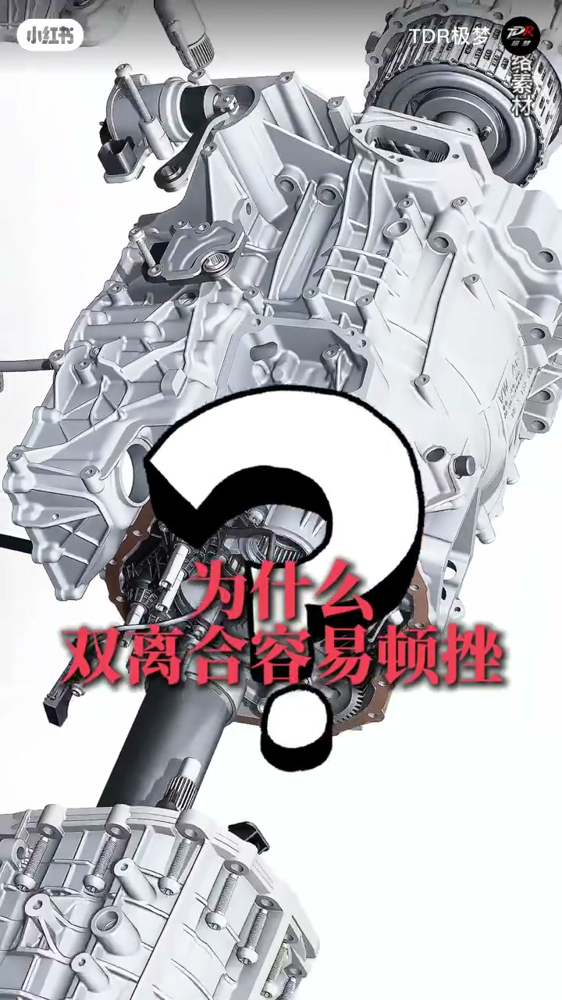
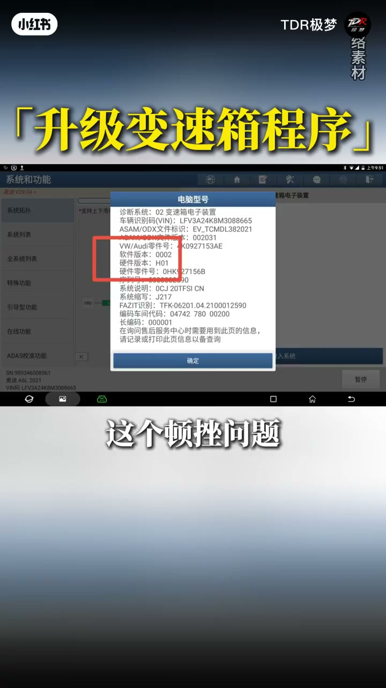
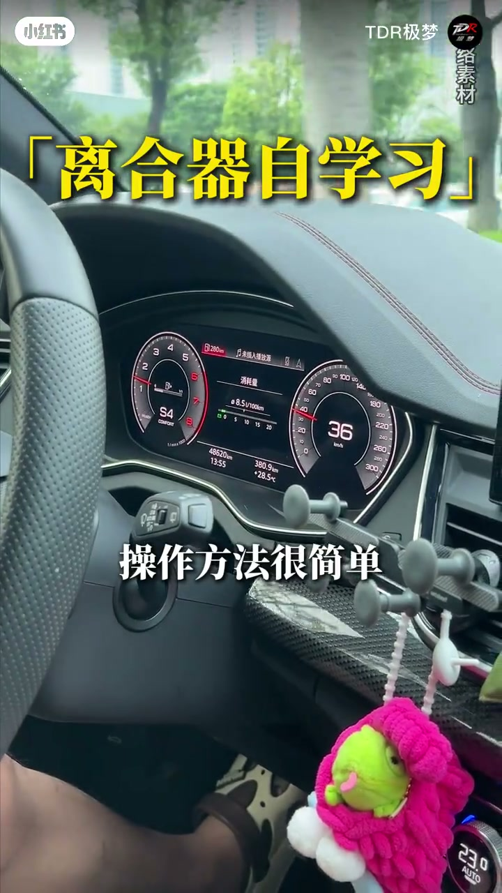
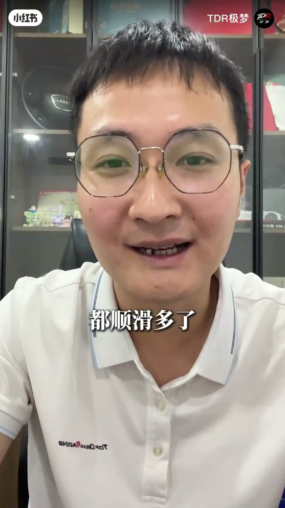
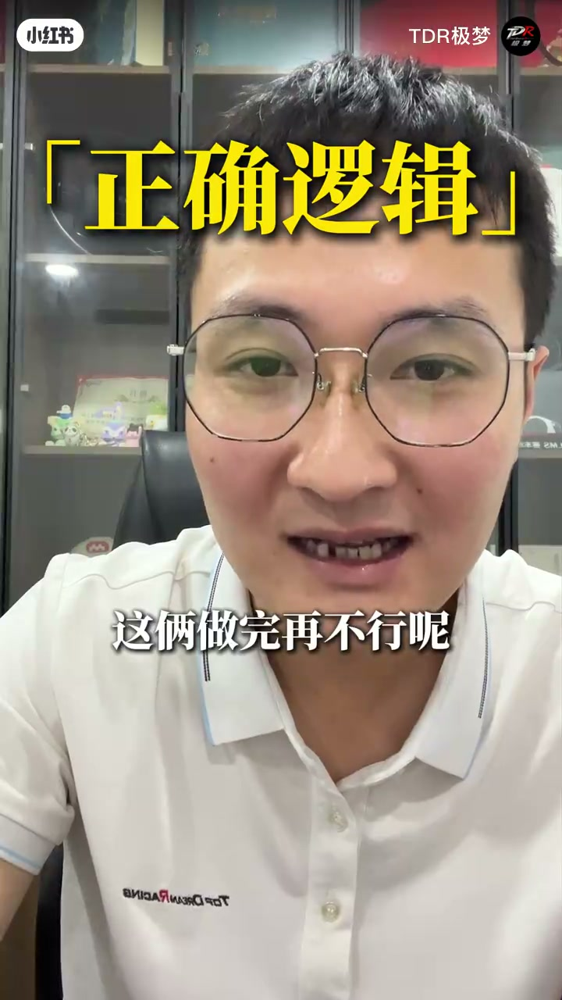

内容要点
「TDR极梦汽车服务」把奥迪市区顿挫归因于离合间隙变大后的控制逻辑，而非一上来就烧片。两招：官方变速箱程序升级 + 手动触发离合器自学习；并提醒别被「必须换离合器总成」话术带节奏。
知识结构
1–3 档频繁切换使间隙变大；顿挫/窜车多属控制逻辑。
尤其 18–20 款老程序；刷写数十分钟、不拆螺丝。
1 升到 7→匀速约 1 分钟→刹回 1；重复 5–6 次。
未过约 30 万公里别先换总成；先程序再学习再查硬件。
顿挫先当软件/学习问题：升级程序 + 自学习校准间隙，通常比直接换上万块离合器总成更划算。
00:00-00:55为何顿挫：间隙 + 老逻辑
市区走走停停、频繁在 1–3 档切换，时间久了离合片间隙慢慢变大，表现为顿挫、起步窜车、加速不顺、降档异响。作者称这类情况约 90% 是控制逻辑问题，不是硬件坏了。
第一招首选升级变速箱程序：奥迪官方针对顿挫有过升级包，特别是 18–20 款老程序车型；更新后离合动作更平顺。可去 4S 或靠谱专修刷写，几十分钟、不用拆螺丝，能解决一半以上顿挫。


00:55-02:09自学习循环与修法顺序
第二招：找空旷路段，从 1 档平顺升到 7 档，匀速约一分钟，再踩刹车让变速箱从 7 档一路降回 1 档，全程不停顿、注意安全；循环 5–6 次，电脑重新校准离合间隙。不少车主反馈顿挫明显减轻。
防坑：只要车没过约 30 万公里，绝大多数顿挫不是离合器烧了；商家「烧片必须换总成、动辄上万」话术要警惕。正确顺序是先更新程序，再自学习，两步仍不行再查硬件。



完整转录（17段）
以下文本由 Whisper medium 模型自动转录，可能存在少量识别误差，已尽可能修正。
奥迪双离合变速箱顿挫起步串车 今天教你两个不花钱少花钱的办法
轻松解决顿挫问题 先搞懂为什么双离合容易顿挫 奥迪的变速箱在市区里面走走停停
频繁的在一到三档之间切换 时间久了离合片的间隙就会慢慢变大 那么结果就是你不顿挫
划到党串车 加速不顺 降档异响 这类情况90%都是控制逻辑的问题 不是硬件坏了
两个实用的解决办法啊 升级变速箱程序首选的了 奥迪官方其实早就针对这个顿挫问题
推出过变速箱的程序升级包 特别是18-20款老程序的车型
更新后 这个逻辑啊 更聪明 离合的动作更加平顺 去这个色电可以刷也可以去靠谱的奥迪专修啊
几十分钟就能搞定 不用拆一颗螺丝 这一招能解决一半以上的顿挫问题 第二个
手动触发离合器自学习 如果不想刷程序 或者是刷完还有顿挫 你也可以让变速箱电脑
重新学习这个离合间隙 操作方法很简单 找个空旷的路段 从这个一档开始平顺升到七档 到七档后
运速行驶个一分钟左右 第二个踩刹车 让变速箱从七档一路降回到一档 全程呢 不停顿 注意安全
这个循环重复五到六次电脑就会自动重新校准这个离合器的间隙了 很多车主试完后反馈啊 顿挫明显的减轻啊
起步换挡都顺滑多了 第三也是闭坑提醒啊 只要车没有过30万公里啊 反正这99的顿挫都不是离合器烧了
很多商家喜欢拿离合器烧时 这个话术让你直接换这个离合器的组件 动辄上万啊 其实大多都不需要
正确的逻辑呢 是先更新程序 再做离合器自学习 这两做完再不行呢 再去检查硬件 这样花的少
效果稳 还不被坑 奥迪的双离合 顿挫不是通病 是逻辑问题 程序更新加这个离合自学习就是最划算的组合权
先别盲目修 先懂原理 懂车的修法才叫真正的省钱